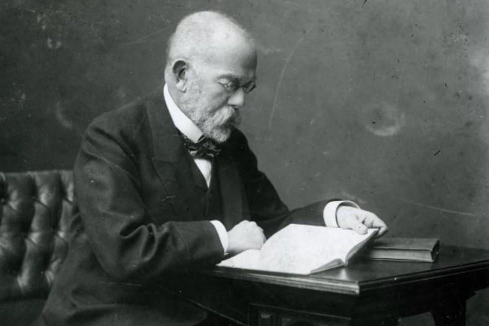

Він також передбачив четвертий відсутній елемент з відносною атомною масою близько 100. Цевиявився технецій - найлегший елемент, який не має стійких ізотопів. Передбачення Менделеєва були підтверджені бельгійським хіміком-аналітиком Жаном Севре Стасом, який виконав найбільш точні на той час вимірювання відносних атомних мас деяких елементів.
За це відкриття Менделеєв, разом із Лотаром Майєром, отримав медаль Деві – нагороду Лондонського Королівського Товариства.

Великого тріумфу Кох досяг 24 березня 1882, коли оголосив про те, що зумів виділити бактерію, що спричинює туберкульоз. Як у той час, так і тепер, це захворювання є однією з головних причин світової людської смертності. Кох виготовив вакцину з ослаблених бактерій туберкульозу, але попередити захворювання за допомогою цієї вакцини йому не вдалося. Вакцинація проти туберкульозу з'явилась тільки за декілька років після смерті Коха, але це ніяк не зменшує важливості відкриття і заслуг його в справі боротьби з туберкульозом. Він не тільки відкрив збудника туберкульозу — бактерії, які одержали назву «паличок Коха», але й довів, що певні види бактерій завжди спричиняють певну хворобу. За ці досягнення в 1905 році Нобелівський комітет удостоїв Роберта Коха Нобелівської премії з фізіології або медицини.
Олівер Еванс спробував використовувати пар високого тиску, щоб без втрати потужності зменшити розмір парової машини Уатта. Близько 1804 року він представив машину, яка працювала при тиску пара близько 3,5 бар. У загальній складності Еванс виготовив близько півсотні подібних машин, велика частина яких використовувалася для приводу насосних установок.
Для механіків він видав у 1805 році керівництво під заголовком «The young steam-engineer's guide» (1838 рік)